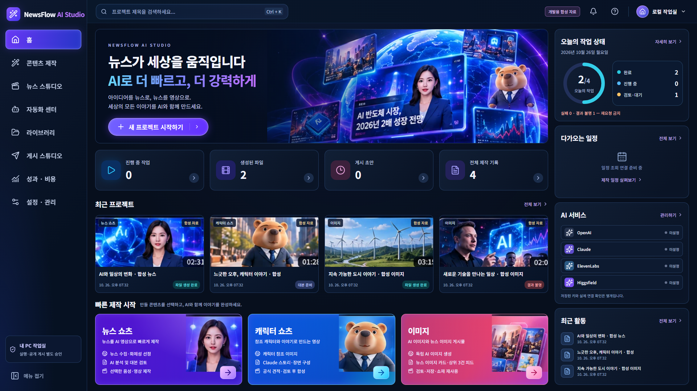
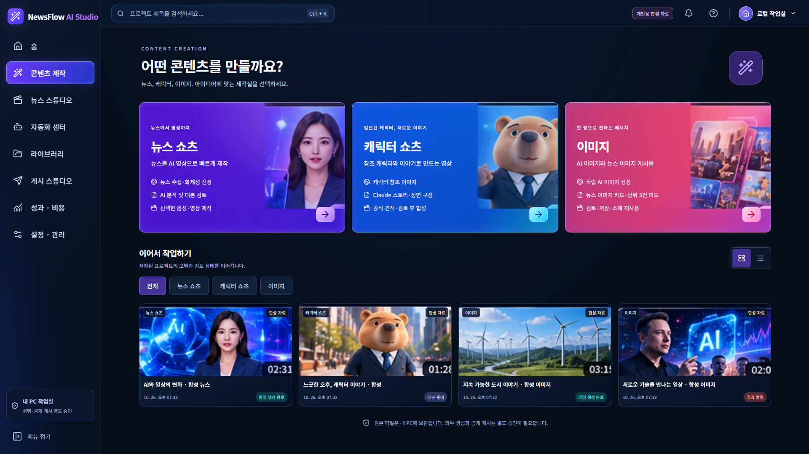
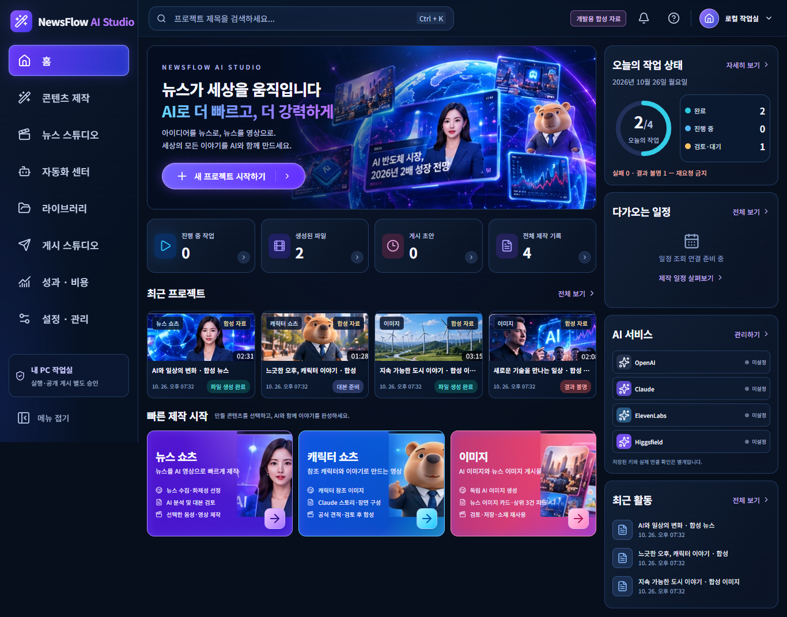
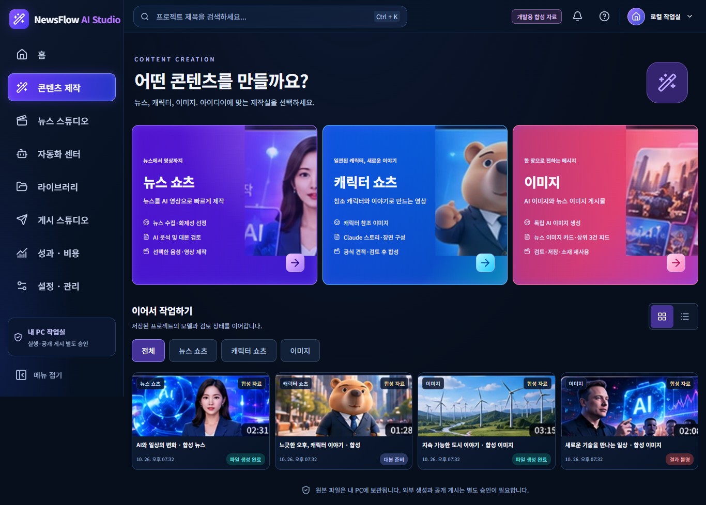

Studio v3 — 마스터·React 시각 비교사용자 선정 원본과 실제 React 실행 화면
원본 PNG SHA-256 일치 확인 · 대시보드와 제작 홈 1차 구현 · 디자인 검토용 합성 데이터
원본 1658×938 / React 1920×1080. 두 화면의 문구·수치·연결 상태는 동일성 평가에서 제외합니다. 서비스 미설정과 별도 검토·공개 승인 상태를 실제 조건대로 구분했습니다.
선정 마스터 원본 · 변경 없음

React 대시보드 · 실제 Chrome 캡처

콘텐츠 제작 홈 · 실제 Chrome 캡처

1366×768 · 대시보드 전체 페이지

1366×768 · 콘텐츠 제작 홈 전체 페이지

시각 비교 판정: CONDITIONAL — 사용자 디자인 검토 대기
- 보존: 왼쪽 앱 메뉴, 지구본 히어로, 4개 통계, 최근 프로젝트, 3개 빠른 제작, 오른쪽 작업·일정·서비스·최근 활동.
- 변경: 예시 사용자 이름·요금제·AI크레딧·증감률·연결 성공 표시를 제거하고 로컬 작업실·실제 조회 조건으로 구분.
- 진행 중: 제작 홈의 세 유형과 이미지 2개 워크플로를 분리. 기존 Python 제작실은 현재 시각 서버에 연결하지 않아 해당 실행 버튼을 비활성화.
- 해상도: 원본 장식 자산을 재사용했으나 히어로 565×280·제작 일러스트 약160px로 고해상도 한계 있음. 콘텐츠 결과 미디어로 쓰지 않음.
- 1366은 세로 스크롤을 허용하며 가로 넘침 없음. 브라우저 DPR1/1.25/1.5/2 검증이며 실제 Windows DPI 변경 검증은 미수행.